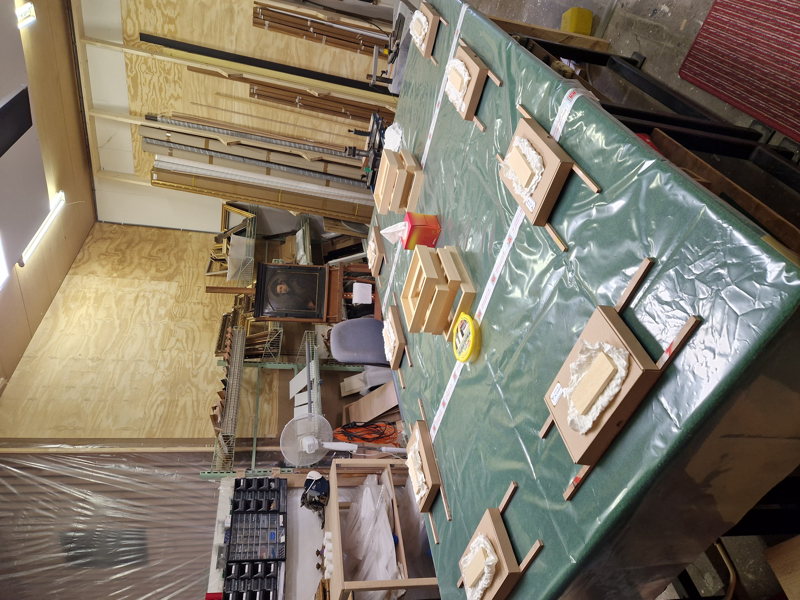
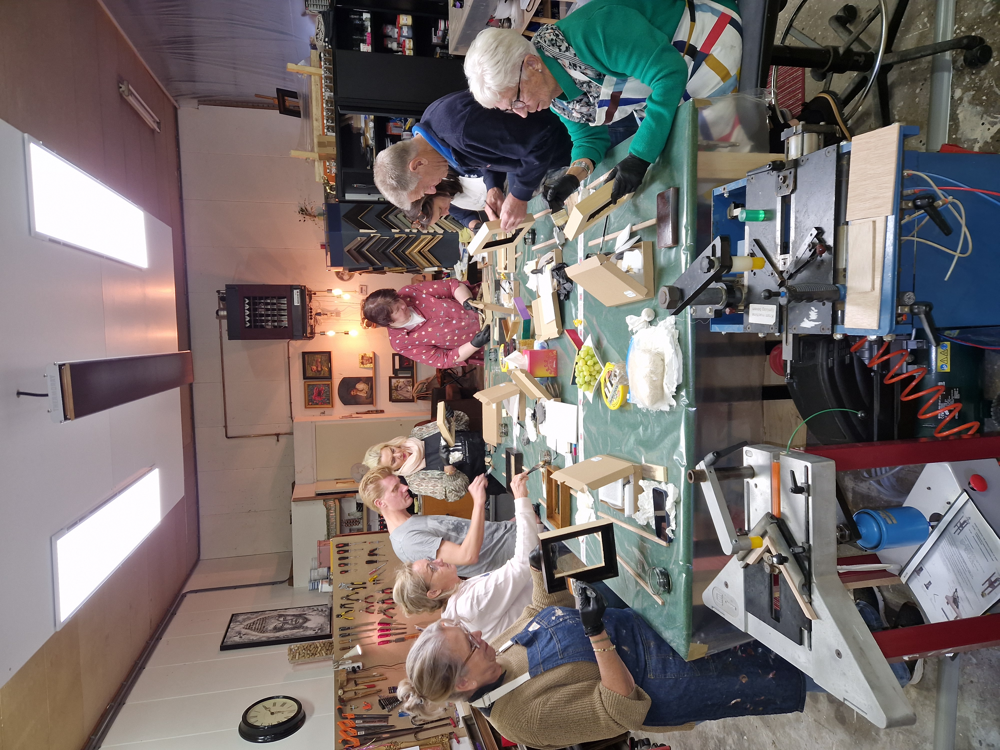
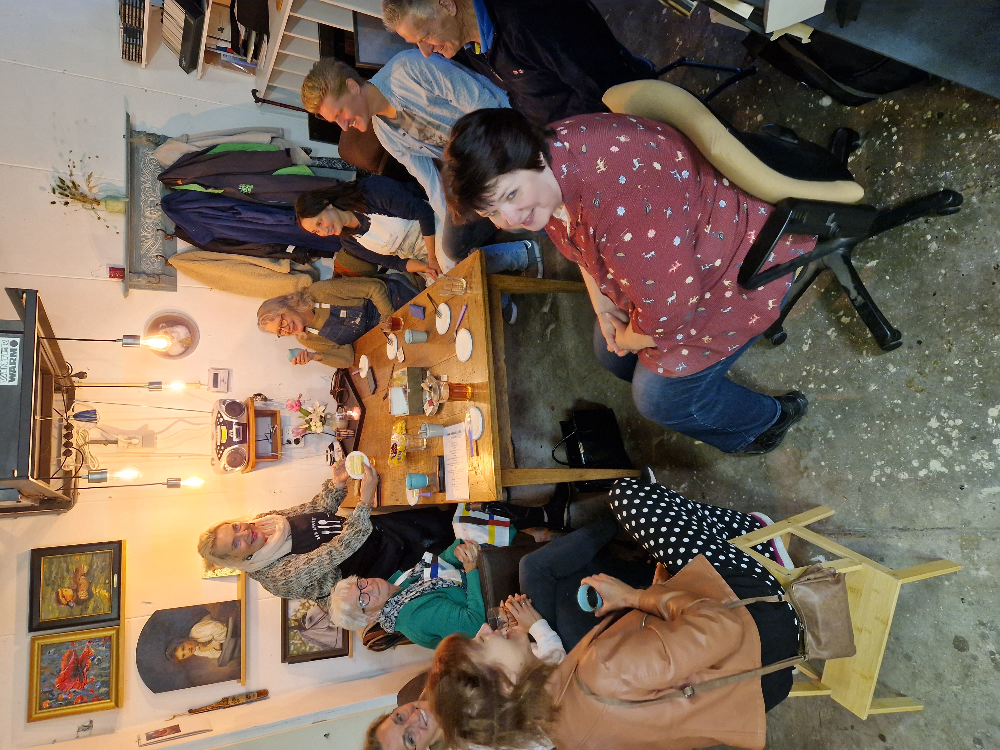
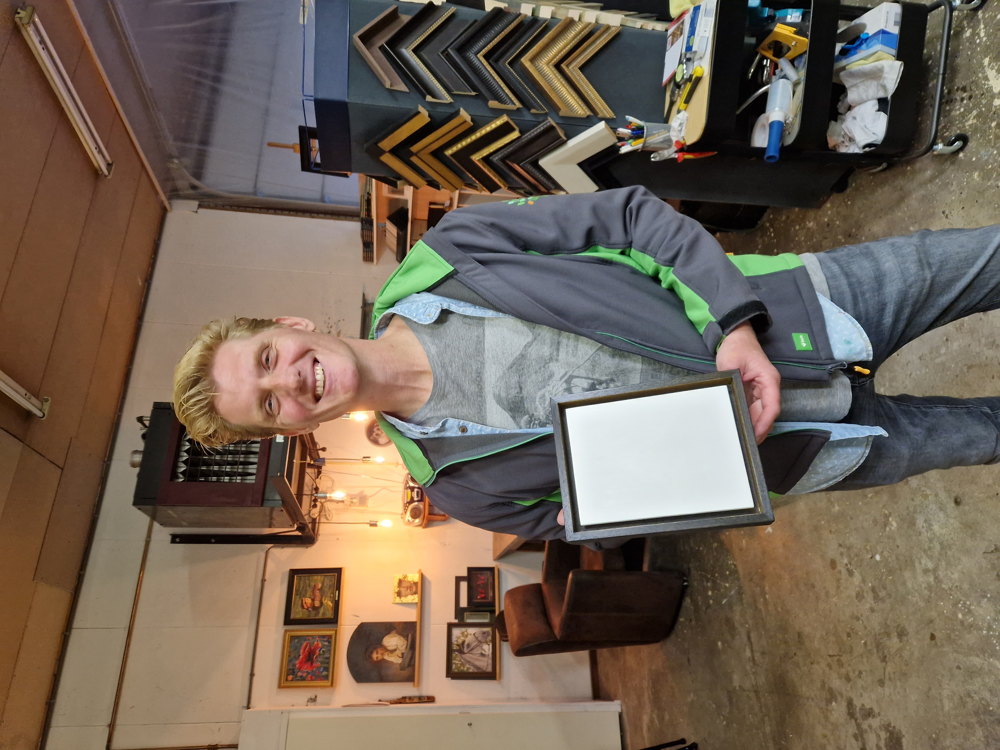
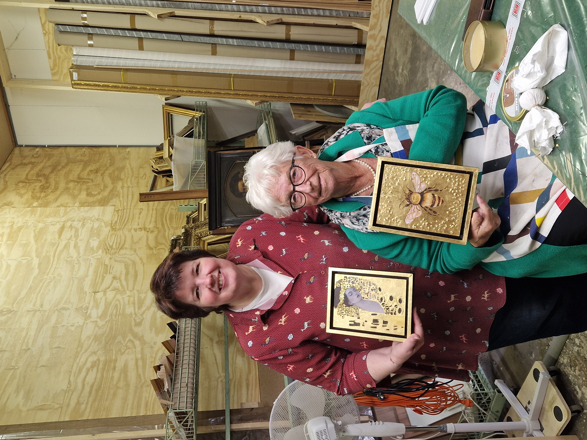

Ambacht laten voelen,
niet alleen uitleggen
Tijdens een workshop komen onderwerpen aan bod als het kiezen van profiel en passe-partout, werken met zuurvrij materiaal, netjes snijden en monteren, en waar u op moet letten als u iets kostbaars of kwetsbaars wilt presenteren. Geen haast, geen massa: wel handvatten die u thuis of in uw eigen atelier verder helpen.
Voor wie
Kunstenaars die zelf willen lijsten, verzamelaars die meer begrip willen van techniek, en iedereen met interesse in het vak van de lijstenmaker. Voorkennis is niet nodig; we stemmen de inhoud af op de groep.
Hoe het voelt
U werkt met echte materialen, ziet voorbeelden uit het atelier en kunt alles vragen wat u wilt weten over inlijsten, conservering of presentatie. Ik begeleid persoonlijk, zodat niemand achterblijft.
Volgende workshop
Er staat momenteel geen datum vast. Wilt u op de hoogte blijven, een idee aandragen of met een kleine groep komen? Stuur gerust een bericht — dan neem ik contact met u op zodra er weer iets op de agenda staat.
Een indruk van het atelier
tijdens eerdere bijeenkomsten
Alle foto's van een eerdere workshopserie in het atelier: werken aan de werkbank, materiaal en sfeerbeelden.









Vragen over inhoud,
data of een eigen groep?
Via het contactformulier kunt u direct uw vraag over workshops sturen. Het onderwerp wordt automatisch op workshop gezet; vul aan wat u wilt weten of wanneer u ongeveer kunt.